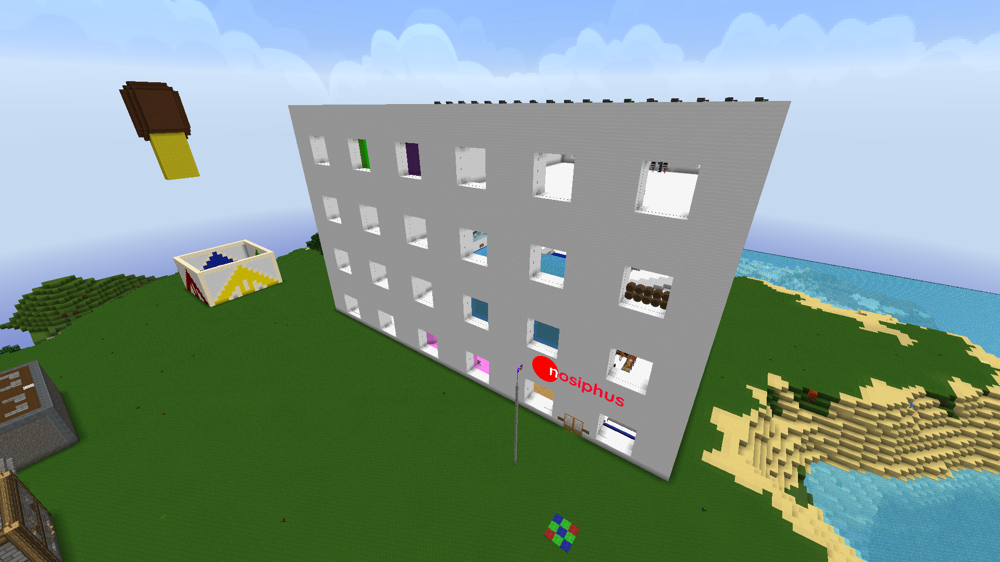

The idea to have a modular headquarters allowing wires, cables, and pipes to be run through the building was not a new idea, but it was never practically usable until June 2017. Sean watched an AdamTheWoo video in which Adam walked through the abandoned Nickelodeon Studios, and Sean decided that the Nosiphus HQ needed a serious overhaul.
The old design, which had been in use since February 2013, consisted of each person having an office on his or her own level. This predated the original HQ back to the design documents. Sean got on the Telkit server, and leveled the ground around the N Tower, lowered all the buildings to the new ground level, and then removed the N Tower from the server world.
After this was done, Sean created a massive hole in the ground and covered it up with White Plastic. Next, he began to build floors separately as big boxes, and then linked them up with specialized door connections. The original design had a light system that allowed each individual room's lighting to be enabled or disabled, but this was removed due to the lag induced. The old one-block elevator system was replaced with floor jumps using OpenBlocks elevators, and the offices were consolidated down into new office blocks, with floors 2 and 3 each having six offices. After the rooms were built, windows were installed at regular intervals, and when that was done, an external door was put in. For the first time, Nosiphus had a completely modular headquarters that would no longer require laggy covers to hide wires.
This new building's electrical system was entirely redone. The old HQ had been powered by a single nuclear reactor sitting in the basement. The new Studios featured two quad-core reactors that were far more efficient at electric power generation. A waste removal system that was safe from clogging up was also installed. A new computer system was put in, and the place was decorated in an entirely new fashion.
The Studios had completely new rooms that were not in any previous HQ: a recording studio, livestream room, Twitch room, and commons space were put in. Areas from previous HQs that had not been in for years were also restored: the PartyCenter, indoor pool, and Bistro.
Tuesday, March 13, 2018 - 19:15:54 - 07:15:54 PM - Central Daylight Time
